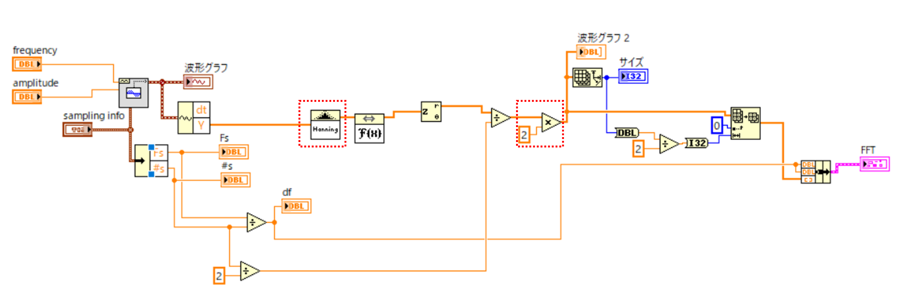
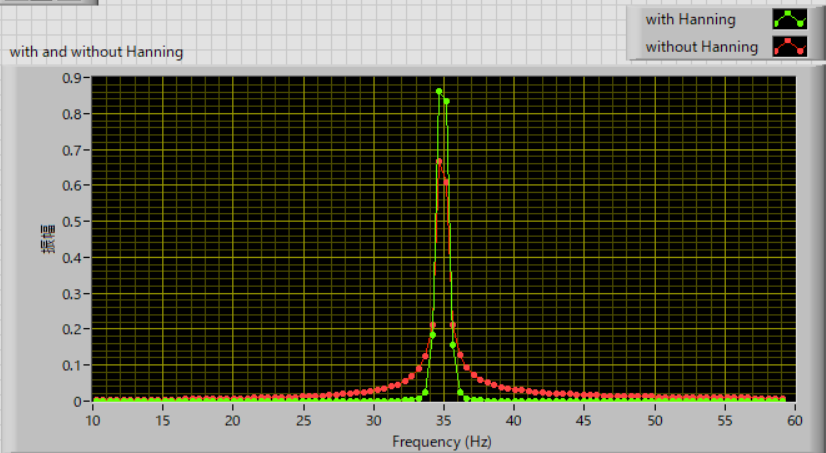
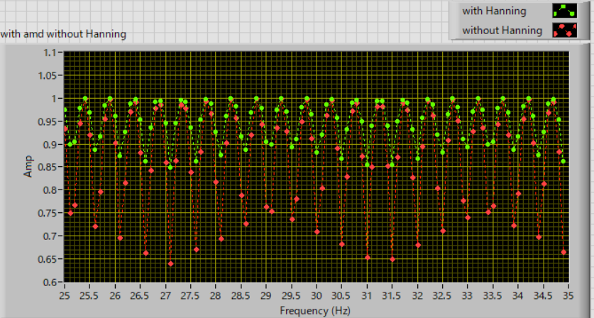

・窓関数の効果
次に，窓関数の効果について検証していきます．今回はハニング窓を使います．
プログラムは，

と，赤線枠の部分をいじりました．
前ページと同じ条件で，35Hz，の正弦波の場合をハニング関数有り無し，で確認しました．

図のように，明らかに窓関数なしの場合スペクトルが広がって，ピークの値が低くなっていることがわかります．
周波数をスキャンしてみると一目瞭然です．
25～35 Hz，で0.1 Hz刻みで周波数をスキャンし見ると，ピーク値の値は，

このように，
窓関数なし ： 0.65 ～ 1
窓関数あり ： 0.85 ～ 1
と大きな違いがあります，窓関数の重要性を再認識しました．
そうは言っても，窓関数アリでも10％強の変動がありますね．．．．．もう少し精度を上げられないだろうか？
ということで次ページは，ガウス関数近似での推定を検討します．